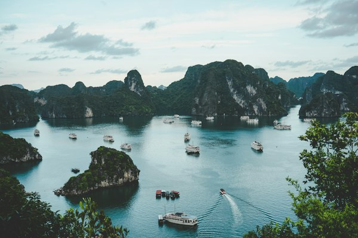
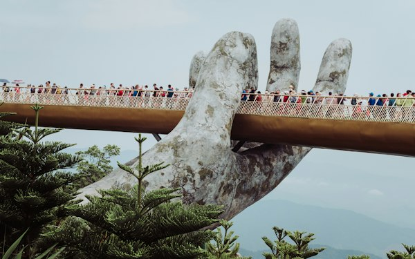
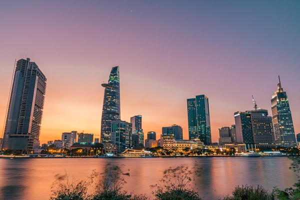
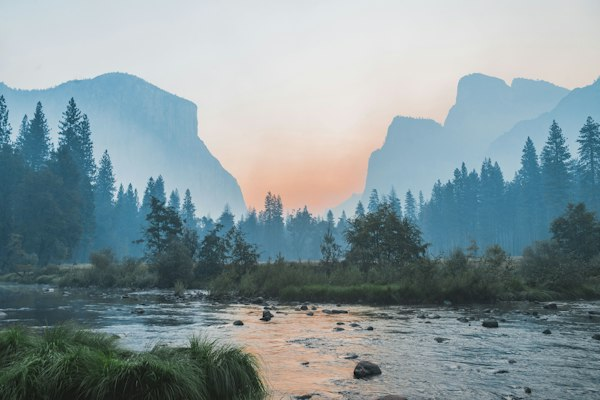
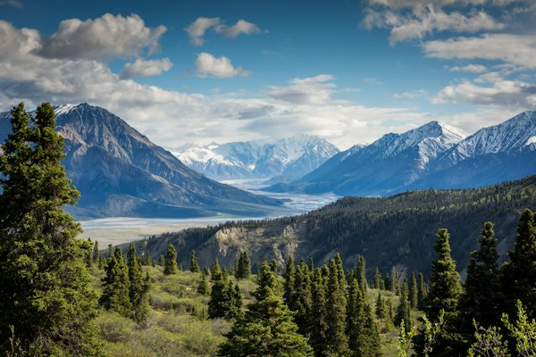
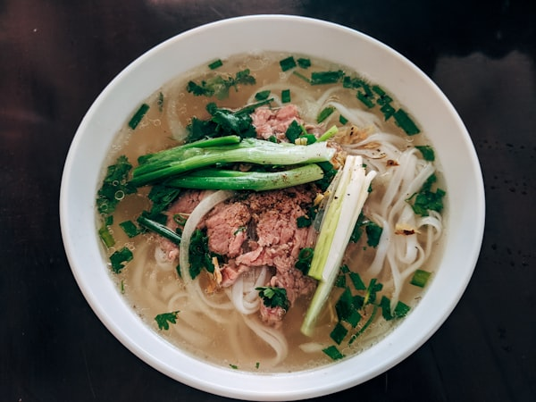
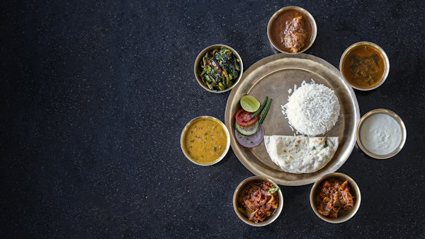

Welcome to our interactive gallery celebrating the natural wonders, historical landmarks, and world-famous cuisine of Vietnam. From the breathtaking limestone pillars of Ha Long Bay to the charming lantern-lit alleys of Hoi An, every corner of the country presents a unique and captivating story.
Beyond stunning landscapes, Vietnamese gastronomy offers an unforgettable journey of tastes and aromas, featuring comforting noodle soups, crisp street-food baguettes, and artisanal beverages. Explore our featured collection below to experience the breathtaking beauty and rich culinary traditions of Vietnam.






